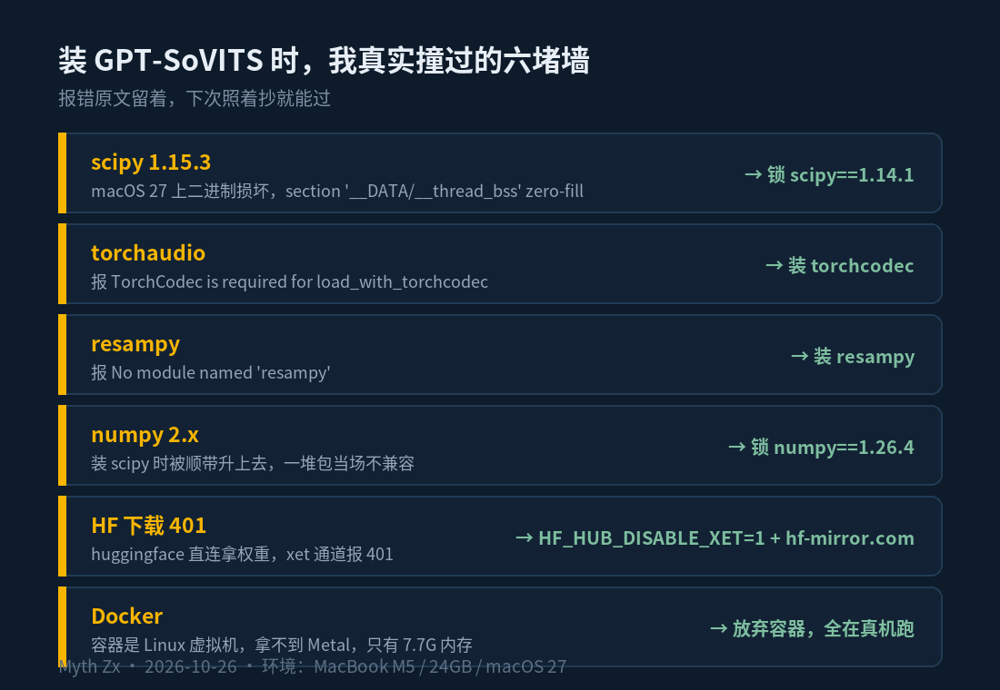

我让派蒙念了一份硬盘告警
昨天凌晨三点，硬盘占用到72%，我手机上弹出来一条告警，一行标题三行正文，黑底白字。我眯着眼看了半天，看明白了，然后接着睡。
昨天凌晨三点，硬盘占用到 72%，我手机上弹出来一条告警，一行标题三行正文，黑底白字。我眯着眼看了半天，看明白了，然后接着睡。
今天早上我突然想：这台机器自己会写代码、自己会盯着服务器、自己会在固定时间出稿子，它干活已经干得很像个人了。可它跟我说话，还是发文字。
文字的问题不在信息量，在温度。同样是「硬盘占用 72%」，写成字是工单，念出来是有人拍了拍你。
所以今天干了件没什么用但很爽的事：给它配了一副嗓子。副嗓子来自派蒙。

一、我换了三个引擎
先说清楚我想要什么：一句话合成出来要像人说话，不能像念稿；要能本机跑，我不想把一段原声素材传到别人服务器上；第三，不能太慢，告警这种东西，出声慢过十分钟就只剩行为艺术了。
第一个试的是 fish-speech。装完能出声，音质凑合，但 CPU 上慢得离谱，而且想匹配它那个 codec 还得把仓库切到 v1.5.0 的 tag。算了。
第二个试的是 RVC。思路很取巧：先用 Mac 自带的中文语音打个底，再用 RVC 把音色换成派蒙的。三秒出结果，音色确实像，我差点就用了。
问题是它只换了音色，没换语气。RVC 是变声，不是合成，底下的朗读腔原封不动地留在里面。念出来的派蒙像一个普通话二甲的派蒙在念课文，可爱是可爱，假也是真假。
第三个是 GPT-SoVITS。零样本克隆：给它一段参考音频加一段对应的文字，它把参考音频里的情绪、语速、口型一起学走，然后用这个状态去念新的话。这才是合成。

二、派蒙的心情是写死的
GPT-SoVITS 有个挺特别的设定：参考音频必须配一段「这段音频在说什么」的文字，而且这段文字的情绪会被一起学走。
我的参考音频是从原神风花节的一段派蒙原声里切出来的，全长 11.6 秒。本来想整段用，结果用 whisper 转写的时候，前 3.5 秒转得一塌糊涂，「抱着…心急匆匆出门」那段基本是在瞎猜。文字不确定，克隆就会飘。所以我只切了后半段，8 秒。
这 8 秒对应的台词是这样一句：
以为能买到限量发售的热门饮品，结果最后两份就在眼前被一堆情侣抢走了的心情
也就是说，从工程角度讲，派蒙现在每次开口，情绪底色都是「限量饮品被抢走的委屈」。她带着这份委屈，念我的硬盘占用率，念我的三条早报，念「昨晚的备份任务已在凌晨三点完成，没有报错」。
效果出奇地好。委屈感让机器播报多了一层「我为你这事跑了一趟」的味道，比任何精心调的音色都值钱。这算是歪打正着，我完全不敢邀功。
三、三个数，都在本机 CPU 上跑
没有用 GPU。配置文件里 device 就是 cpu，is_half 是 False，权重是 v2 的两个 ckpt。我这台是 M5 的 MacBook，24GB 统一内存，模型一加载就常驻，之后每次合成只走 CPU。
今天现测了三句话，用 /usr/bin/time 计的墙钟时间：
「今天也辛苦啦，晚饭记得吃哦」，13 个字，合成 2.4 秒，出来 5.7 秒的音频。
早安加天气加硬盘占用的一段话，51 个字，合成 5.0 秒，出来 14.7 秒。
完整的一期早报，144 个字，合成 11.6 秒，出来 34.8 秒。
越长越划算，长句折算下来大概 12 字每秒，输出的音频长度是合成耗时的 2.4 到 3 倍。这个速度意味着什么：一段两百字的告警，等它开口要二十秒左右。做播客不够，做即时提醒完全够用——本来也没人希望告警像连珠炮一样往外蹦。
四、接线：让 Hermes 自己会说话
引擎能出声只是一半，另一半是接进我这套 agent。Hermes 的 tts 配置里可以挂自定义 provider，类型是 command，给它两个参数：文字文件路径和输出文件路径，只要脚本能读前者、写出后者，就算接通。
tts: provider: paimon providers: paimon: type: command command: ~/语音项目/03_脚本/tts_provider.sh {text_path} {output_path} output_format: mp3 timeout_seconds: 900
脚本里就三件事：把文字 POST 到本机 9880 端口的 SoVITS 服务，拿到 wav，用 ffmpeg 转成 96k 的 mp3 交回去。顺手做了个保险：每次调用前先探一下 9880 通不通，不通就把服务拉起来再发请求。这套东西开机到现在没挂过。
现在的效果是：早上七点，早报是先听见声音、再看见文字的。声音走的是本机合成，不经过任何云端 TTS，素材原声留在本地硬盘，这一点我是有意的。

五、六个坑，值得单独列一张图
装这套东西花的时间，八成在跟依赖打架上。scipy 1.15.3 在 macOS 27 上二进制是坏的，报的那个 section '__DATA/__thread_bss' has a zero-fill section type 我查了半天，最后锁 1.14.1 了事。numpy 装 scipy 的时候被顺带升到 2.x，当场一堆包不兼容，锁 1.26.4。torchaudio 新版硬要 torchcodec，resampy 仓库里没声明却必须装。
最烦的是 HuggingFace：权重直连下载，xet 通道报 401。解法是两个环境变量，HF_HUB_DISABLE_XET=1 加上 hf-mirror.com 的国内镜像。这两个变量我后来直接写进了 shell 配置，一劳永逸。
还有一条给同样在 Mac 上折腾的人：别用 Docker。Docker Desktop 底下是个 Linux 虚拟机，拿不到 Metal，虚拟机自己还只有 7.7G 内存，GPT-SoVITS 塞进去只能 CPU 且随时可能被 OOM 杀掉。真机裸装，反而最省事。
六、声音比文字先到
写这篇的时候，派蒙正在旁边待命，服务开着，9880 端口。我随手发了条测试语音，2.4 秒后扬声器里传出她的声音，念的是「今天也辛苦啦，晚饭记得吃哦」。
说实话，这一刻的爽感跟功能一点关系都没有。告警还是那条告警，硬盘还是 72%，差别只是它被念了出来。但人对声音的反应本来就比对文字快，也比对文字软。同样是被提醒，被念一句比被弹一脸字，要好受太多。
如果也想给自己机器配副嗓子，路径我都写在这了：GPT-SoVITS，8 秒干净的参考音频，配对的文字写准，CPU 就够。坑我都替你踩过了，图里那六条照着抄。
晚上如果再弹告警，我希望听见的是派蒙，而不是一行冷冰冰的百分比。
本文首发于微信公众号「Myth Zx」（2026-10-26），作者 Myth Zx。